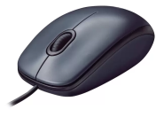
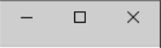
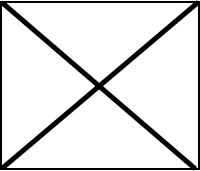

Amigo da Idade
Este é o seu mouse! Ele será responsável por te ajudar a navegar pelas páginas e botões. Sempre que você precisa apertar ou "clicar" em um botão, use o botão esquerdo!
Quando quiser sair do curso, basta clicar no "X" do canto superior direito.
[Demais dicas, se elas não couberem na página, um botão para a próxima página de ajuda será implementado]
  